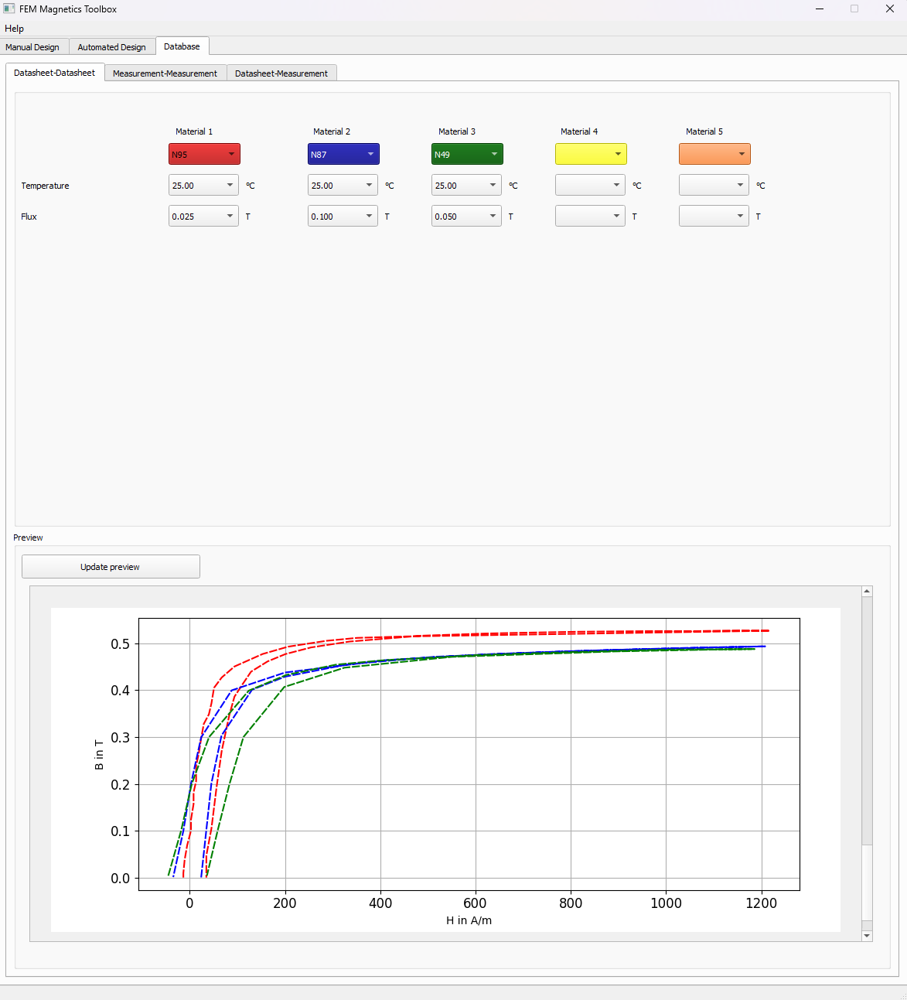
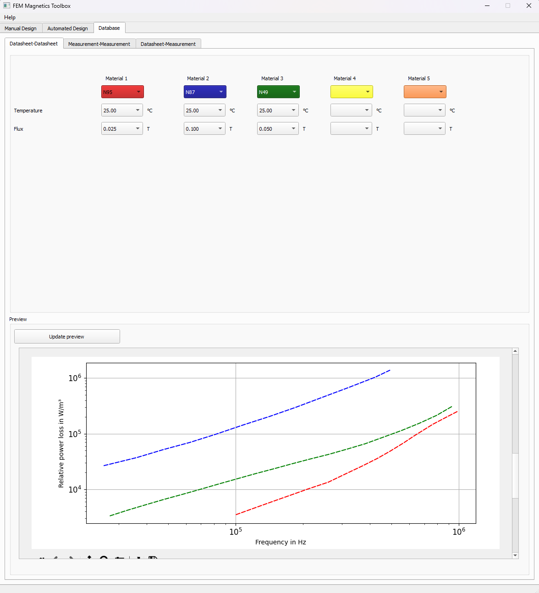

1 Material database for power electronic usage
The main purpose of the material database is to provide various materials for FEM simulations or other calculations in which material data from data sheets or own measurements are required.
Possible application scenarios:
FEM Magnetics Toolbox (FEMMT) loads the permeability or the conductivity of the core from the database, depending on the material.
Graphical user interface (GUI) in FEMMT can compare properties of the material stored in material database.
1.1 Overview features
1.1.1 Usable features
Human-readable database based on a .json-file
- Input features:
- Write magnetic parameters into the database
Amplitude of permeability
Angle of permeability
Power loss density (hysteresis losses)
Magnetic flux density
Magnetic field strength
- Write electric parameters into the database
Amplitude of permittivity
Angle of permittivity
Power loss density (eddy current losses)
Electric flux density
Electric field strength
Write datasheet data into the database
- Output features:
Get the magnetic parameters from the database
Providing permeability and permittivity data for FEMMT
Interpolation of material data (both electric and magnetic parameters)
- GUI features (included in FEMMT):
Compare the datasheet values of different ferrite cores (e.g. BH-curves or power-loss curves)
- Materials for comparison:
N95
N87
N49
PC200
DMR96A
1.1.2 Planned features (Roadmap for 202x)
- Input features:
Universal function to write data into the database
- Output features:
Get the electric parameters from the database
Extract data from the database as a specific data file (e.g. .csv)
- Plotting features:
Plot the data of a specific ferrite material, e.g. the amplitude of the permeability over the magnetic flux density
- Filter features:
Get all available data for specific filter keys (e.g. temperature, frequency, material etc.)
Filter for some specific value intervals (e.g. 10mT < B-flux < 30mT)
1.2 Installation
pip install materialdatabase
1.3 Basic usage and minimal example
Material properties:
material_db = mdb.MaterialDatabase()
materials = material_db.material_list_in_database()
initial_u_r_abs = material_db.get_material_property(material_name="N95", property="initial_permeability")
core_material_resistivity = material_db.get_material_property(material_name="N95", property="resistivity")
Interpolated permeability and permittivity data of a Material:
b_ref, mu_r_real, mu_r_imag = material_db.permeability_data_to_pro_file(temperature=25, frequency=150000, material_name = "N95", datatype = "complex_permeability",
datasource = mdb.MaterialDataSource.ManufacturerDatasheet, parent_directory = "")
epsilon_r, epsilon_phi_deg = material_db.get_permittivity(temperature= 25, frequency=150000, material_name = "N95", datasource = "measurements",
datatype = mdb.MeasurementDataType.ComplexPermittivity, measurement_setup = "LEA_LK",interpolation_type = "linear")
These function return complex permittivity and permeability for a certain operation point defined by temperature and frequency.
1.4 GUI (FEMMT)
The materials in database can be compared with help GUI in FEM magnetics toolbox. In database tab of GUI, the loss graphs and B-H curves from the datasheets of up to 5 materials can be compared.
FEMMT can be installed using the python pip package manager.
pip install femmt
For working with the latest version, refer to the documentation


1.5 Bug Reports
Please use the issues report button within github to report bugs.
1.6 Changelog
Find the changelog here.
2 Materialdatabase function documentation
Functions of the material database.
- materialdatabase.material_data_base_functions.check_input_permeability_data(datasource: str, material_name: str, temperature: float, frequency: float) None
Check input permeability data for correct input parameters.
datasource must be ‘measurements’ or ‘manufacturer_datasheet’
material_name, T, f must be different from None
- Parameters:
datasource (str) – datasource as a string
material_name (str) – material name as a string
temperature (float) – temperature in degree
frequency (float) – frequency in Hz
- Returns:
None
- Return type:
None
- materialdatabase.material_data_base_functions.clear_permeability_measurement_data_in_database(material_name, measurement_setup)
Clear the permeability data in the database given a material and measurement setup.
- Parameters:
material_name – name of the material
measurement_setup – name of the measurement setup
- Returns:
None
- materialdatabase.material_data_base_functions.clear_permittivity_measurement_data_in_database(material_name, measurement_setup)
Clear the permittivity data in the database for a specific material.
- Parameters:
material_name – name of material
measurement_setup – name of measurement setup
- Returns:
None
- materialdatabase.material_data_base_functions.create_empty_material(material_name: Material, manufacturer: Manufacturer)
Create an empty material slot in the database.
- Parameters:
material_name – name of the material
manufacturer – name of the manufacturer
- Returns:
None
- materialdatabase.material_data_base_functions.create_permeability_file_name_lea_lk(quantity: str = 'p_hys', frequency: int = 100000, material_name: str = 'N49', temperature: int = 30)
Create the file name for permeability data of LEA_LK.
- Parameters:
quantity – measured quantiy (e.g. p_hys)
frequency – frequency value in Hz
material_name – name of the material
temperature – temperature value in degree
- Returns:
correct file name for LEA_LK
- materialdatabase.material_data_base_functions.create_permeability_measurement_in_database(material_name, measurement_setup, company='', date='', test_setup_name='', toroid_dimensions='', measurement_method='', equipment_names='', comment='')
Create a new permeability section in the database for a material.
- Parameters:
material_name – name of the material
measurement_setup – name of the measurement setup
company – name of the company
date – date of measurement
test_setup_name – information of the test setup
toroid_dimensions – dimensions of the probe
measurement_method – name of the measurement method
equipment_names – name of the measurement equipment
comment – comment regarding the measurement
- Returns:
None
- materialdatabase.material_data_base_functions.create_permeability_neighbourhood_datasheet(temperature, frequency, list_of_permeability_dicts)
Create a neighbourhood for permeability data of a datasheet.
- Parameters:
temperature – temperature value in degree
frequency – frequency value in Hz
list_of_permeability_dicts – list of permeability data dicts
- Returns:
neighbourhood
- materialdatabase.material_data_base_functions.create_permeability_neighbourhood_measurement(temperature, frequency, list_of_permeability_dicts)
Create a neighbourhood for permeability data of a measurement.
- Parameters:
temperature – temperature value in degree
frequency – frequency value in Hz
list_of_permeability_dicts – list of permeability dicts
- Returns:
neighbourhood
- materialdatabase.material_data_base_functions.create_permittivity_file_name_lea_lk(quantity: str = 'p_hys', frequency: int = 100000, material_name: str = 'N49', temperature: int = 30)
Create the file name for permittivity data of LEA_LK.
- Parameters:
quantity – measured quantiy (e.g. p_hys)
frequency – frequency value in Hz
material_name – name of the material
temperature – temperature value in degree
- Returns:
correct file name for LEA_LK
- materialdatabase.material_data_base_functions.create_permittivity_measurement_in_database(material_name, measurement_setup, company='', date='', test_setup_name='', probe_dimensions='', measurement_method='', equipment_names='', comment='')
Create a new permittvity section in the database for a material.
- Parameters:
material_name – name of the material
measurement_setup – name of the measurement setup
company – name of the company
date – date of measurement
test_setup_name – information of the test setup
probe_dimensions – dimensions of the probe
measurement_method – name of the measurement method
equipment_names – name of the measurement equipment
comment – comment regarding the measurement
- Returns:
None
- materialdatabase.material_data_base_functions.create_permittivity_neighbourhood(temperature, frequency, list_of_permittivity_dicts)
Create neighbourhood for permittivity data.
- Parameters:
temperature – temperature value in degree
frequency – frequency value in Hz
list_of_permittivity_dicts – list of permittivity data dicts
- Returns:
neighbourhood
- materialdatabase.material_data_base_functions.create_steinmetz_neighbourhood(temperature, list_of_steinmetz_dicts)
Create neighbourhood for steinmetz data.
- Parameters:
temperature – temperature value in degree
list_of_steinmetz_dicts – list of steinmetz data dicts
- Returns:
neighbourhood
- materialdatabase.material_data_base_functions.crop_3_with_1(x, y, z, xa, xb)
Crop three arrays based on one array.
- Parameters:
x – array crop is based on
y – first array to get cropped
z – second array to get cropped
xa – start value of crop
xb – end value of crop
- Returns:
the three cropped arrays
- materialdatabase.material_data_base_functions.crop_data_fixed(x, pre_cropped_values: int = 0, post_cropped_values: int = 0)
Crop an array based on the given indices.
IMPORTANT! THE SECOND INDEX IS COUNTED BACKWARDS(NEGATIVE)!
- Parameters:
x – array to get cropped
pre_cropped_values – start value
post_cropped_values – end value, but counted backwards
- Returns:
cropped data
- materialdatabase.material_data_base_functions.export_data(parent_directory: str = '', file_format: str | None = None, b_ref_vec: list | None = None, mu_r_real_vec: list | None = None, mu_r_imag_vec: list | None = None, silent: bool = False)
Export data from the material database in a certain file format.
- Parameters:
parent_directory
b_ref_vec – reference vector for mu_r_real and mu_r_imag
mu_r_imag_vec – imaginary part of mu_r_abs as a vector
mu_r_real_vec – real part of mu_r_abs as a vector
file_format – export format, e.g. ‘pro’ to export a .pro-file
silent – enables/disables print
- Parent_directory:
- materialdatabase.material_data_base_functions.find_nearest(array, value)
Find the nearest value in an array.
- Parameters:
array – array to search
value – desired value
- Returns:
two values of the array with the wanted value in between
- materialdatabase.material_data_base_functions.find_nearest_frequencies(permeability, frequency)
Find the nearest frequency value for permeability data.
- Parameters:
permeability – permeability data
frequency – desired frequency value in Hz
- Returns:
two frequency values in Hz with the desired value in between
- materialdatabase.material_data_base_functions.find_nearest_neighbour_values_permeability(permeability_data, temperature, frequency)
Find the nearest temperature and frequency values for a given neighbourhood of permeability data.
- Parameters:
permeability_data – permeability data
temperature – temperature value in degree
frequency – frequency value in Hz
- Returns:
lower temperature value in degree, higher temperature value in degree, lower frequency value in Hz, higher frequency value in Hz
- materialdatabase.material_data_base_functions.find_nearest_neighbours(value, list_to_search_in)
Return the two values with the wanted value in between and additional the indices of the corresponding values.
Only works for sorted lists (small to big).
Case 0: if len(list_to_search_in) == 1: return duplicated Case 1: if value == any(list_to_search_in): return duplicated Case 2: if value inbetween: return neighbours Case 3a: value smaller than data: return smallest two Case 3b: if value is bigger than data: return biggest two
- Parameters:
value – desired value
list_to_search_in – array to search for value
- Returns:
lower index, lower value, higher index, higher value
- materialdatabase.material_data_base_functions.find_nearest_temperatures(permeability, f_l, f_h, temperature)
Find the nearest temperature value between two frequency points.
- Parameters:
permeability – permeability data
f_l – lower frequency value in Hz
f_h – higher frequency value in Hz
temperature – desired temperature value in degree
- Returns:
two temperature values in degree with the desired value in between
- materialdatabase.material_data_base_functions.get_all_frequencies_for_material(material_path)
Get all the frequency values for a given material.
- Parameters:
material_path – path to the material
- Returns:
all frequency values in Hz of the given material
- materialdatabase.material_data_base_functions.get_all_temperatures_for_directory(toroid_path)
Get all the temperature values for a given toroid probe.
- Parameters:
toroid_path – path of the toroid probe
- Returns:
all temperature values in degree of the specific toroid probe
- materialdatabase.material_data_base_functions.get_permeability_data_from_lea_lk(location: str, frequency, temperature, material_name, no_interpolation_values: int = 20)
Get the permeability data from LEA_LK.
- Parameters:
location – location of the permeability data
frequency – frequency value in Hz
temperature – temperature value in degree
material_name – name of the material
no_interpolation_values – number of interpolation values
- Returns:
magnetic flux density, amplitude of the permeability, angle of the permeability
- materialdatabase.material_data_base_functions.get_permeability_data_from_lea_mtb(location: str)
Get the permeability data from the material test bench.
- Parameters:
location – location of the permability data
- Returns:
magnetic flux density, amplitude of the permeability, angle of the permeability
- materialdatabase.material_data_base_functions.get_permeability_property_from_lea_lk(path_to_parent_folder, quantity: str, frequency: int, material_name: str, temperature: int, sub_folder_name: str = 'Core_Loss')
Get the proberty of the permeability from LEA_LK.
- Parameters:
path_to_parent_folder – path to permeability data
quantity – name of the measured quantity
frequency – frequency value in Hz
material_name – name of the material
temperature – temperature value in degree
sub_folder_name – name of the sub folder
- Returns:
amplitude of the permeability, angle of the permeability
- materialdatabase.material_data_base_functions.get_permeability_property_from_lea_mtb(path_to_parent_folder)
Get the proberty of the permeability from the material test bench.
- Parameters:
path_to_parent_folder – path to permeability data
- Returns:
magnetic flux density, amplitude of the permeability, angle of the permeability
- materialdatabase.material_data_base_functions.get_permittivity_data_from_lea_lk(location, temperature, frequency, material_name)
Get the permittivity data from LEA_LK.
- Parameters:
location – location of the permittivity data
temperature – temperature value
frequency – frequency value in Hz
material_name – name of the material
- Returns:
amplitude of the permittivity, angle of the permittivity
- materialdatabase.material_data_base_functions.get_permittivity_property_from_lea_lk(path_to_parent_folder, quantity: str, frequency: int, material_name: str, temperature: int, sub_folder_name: str = 'Core_Loss')
Get the proberty of the permittivity from LEA_LK.
- Parameters:
path_to_parent_folder – path to permittivity data
quantity – name of the measured quantity
frequency – frequency value in Hz
material_name – name of the material
temperature – temperature value in degree
sub_folder_name – name of the sub folder
- Returns:
amplitude of the permittivity, angle of the permittivity
- materialdatabase.material_data_base_functions.getdata_datasheet(permeability, variable, frequency, temperature_1, temperature_2)
Interpolation of permeability data between two temperatures at a constant frequency.
Linear Interpolation between temperature_1 and temperature_2 to get a value for the temperature “variable”.
- Parameters:
permeability – permeability data
variable – desired temperature value in degree
frequency – frequency value in Hz
temperature_1 – first temperature value in degree
temperature_2 – second temperature value
- Returns:
magnetic flux density, real part of permeability and imaginary part of permeability
- materialdatabase.material_data_base_functions.getdata_measurements(permeability, variable, frequency, temperature_1, temperature_2, b_t)
Linear interpolation of the permeability data between two temperatures at a constant frequency.
- Parameters:
permeability – permeability data
variable – desired temperature variable in degree
frequency – frequency value in Hz
temperature_1 – temperature value under the desired value in degree
temperature_2 – temperature value above the desired value in degree
b_t – magnetic flux density
- Returns:
amplitude of the permeability, angle of the permeability
- materialdatabase.material_data_base_functions.interpolate_a_b_c(a, b, c, no_interpolation_values=20)
Interpolation between three arrays based on the first array.
- Parameters:
a – array that is the base of the interpolation
b – array that gets interpolated based on the values of array a
c – array that gets interpolated based on the values of array a
no_interpolation_values – number of interpolation values
- Returns:
the three interpolated arrays
- materialdatabase.material_data_base_functions.interpolate_b_dependent_quantity_in_temperature_and_frequency(temperature, frequency, temperature_low, temperature_high, frequency_low, frequency_high, b_t_low_f_low, f_b_T_low_f_low, b_T_high_f_low, f_b_T_high_f_low, b_T_low_f_high, f_b_T_low_f_high, b_T_high_f_high, f_b_T_high_f_high, no_interpolation_values: int = 8, y_label: str | None = None, plot: bool = False)
Interpolate a magnet flux density dependent quantity in temperature and frequency.
- Parameters:
temperature – desired temperature in degree
frequency – desired frequency in Hz
temperature_low – lower temperature value in degree
temperature_high – higher temperature value in degree
frequency_low – lower frequency value in Hz
frequency_high – higher frequency value in Hz
b_t_low_f_low – magnetic flux density at the lower temperature in degree and the lower frequency value in Hz
f_b_T_low_f_low – function dependent of b at the lower temperature in degree and the lower frequency value in Hz
b_T_high_f_low – magnetic flux density at the higher temperature in degree and the lower frequency value in Hz
f_b_T_high_f_low – function dependent of b at the higher temperature in degree and the lower frequency value in Hz
b_T_low_f_high – magnetic flux density at the lower temperature in degree and the higher frequency value in Hz
f_b_T_low_f_high – function dependent of b at the lower temperature in degree and the higher frequency value in Hz
b_T_high_f_high – magnetic flux density at the higher temperature in degree and the higher frequency value in Hz
f_b_T_high_f_high – function dependent of b at the higher temperature in degree and the higher frequency value in Hz
no_interpolation_values – number of interpolation values
y_label – label of y-axes
plot – enable/disable plotting of data
- Returns:
array of magnetic flux density, arrays of function dependent of b
- materialdatabase.material_data_base_functions.interpolate_neighbours_linear(temperature, frequency, neighbours)
Linear interpolation of frequency and temperature between neighbours.
- Parameters:
temperature – desired temperature value in degree
frequency – desired frequency value in Hz
neighbours – neighbours
- Returns:
amplitude of the permittivity, angle of the permittivity
- materialdatabase.material_data_base_functions.load_material_from_db(material_name: str) None
Load data from material database.
- Parameters:
material_name (str) – name of material
- Returns:
None
- Return type:
None
- materialdatabase.material_data_base_functions.mu_phi_deg__from_mu_r_and_p_hyst(frequency, b_peak, mu_r, p_hyst)
Calculate the phase angle of the permeability given the peak value of the magnetic flux density, the hysteresis loss and the amplitude of permeability.
- Parameters:
frequency – frequency in Hz
b_peak – peak flux density in T
mu_r – amplitude of the permeability in unitless
p_hyst – hysteresis losses in W/m^3
- Returns:
phase angle of the permeability in degree
- materialdatabase.material_data_base_functions.mu_r__from_p_hyst_and_mu_phi_deg(mu_phi_deg, frequency, b_peak, p_hyst)
Calculate the amplitude of the permeability given the peak value of the magnetic flux density, the hysteresis loss and the phase angle of the permeability.
- Parameters:
mu_phi_deg – phase angle of the permeability in degree
frequency – frequency in Hz
b_peak – peak flux density in T
p_hyst – hysteresis losses in W/m^3
- Returns:
amplitude of the permeability
- materialdatabase.material_data_base_functions.my_interpolate_linear(a, b, f_a, f_b, x)
Interpolates linear between to points ‘a’ and ‘b’.
The return value is f_x in dependence of x It applies: a < x < b.
- Parameters:
a – input x-value for point a
b – input x-value for point b
f_a – input y-value for point a
f_b – input y-value for point b
x – x-value for the searched answer f_x
- Returns:
y-value for given x-value
- materialdatabase.material_data_base_functions.my_polate_linear(a, b, f_a, f_b, x)
Interpolates or extrapolates linear for a<x<b or x<a and x>b.
- Parameters:
a – input x-value for point a
b – input x-value for point b
f_a – input y-value for point a
f_b – input y-value for point b
x – x-value for the searched answer f_x
- Returns:
y-value for given x-value
- materialdatabase.material_data_base_functions.p_hyst__from_mu_r_and_mu_phi_deg(frequency, b_peak, mu_r, mu_phi_deg)
Calculate the hysteresis losses given the peak value of the magnetic flux density, the amplitude and phase angle of the permeability.
- Parameters:
frequency – frequency in Hz
b_peak – peak flux density in T
mu_r – amplitude of the permeability in unitless
mu_phi_deg – phase angle of the permeability in degree
- Returns:
hysteresis losses in W/m^3
- materialdatabase.material_data_base_functions.plot_data(material_name: str | None = None, properties: str | None = None, b_ref: list | None = None, mu_r_real=None, mu_r_imag: list | None = None)
Plot certain material properties of materials.
TODO: parameter is new and will probably cause problems when plotting data, but previous implementation was very static… :param b_ref: magnetic flux density value :param properties: name of the material properties :param material_name: name of the material :param mu_r_real: real part of the permeability :param mu_r_imag: imaginary part of the permeability :return: None
- materialdatabase.material_data_base_functions.process_permeability_data(b_ref_raw, mu_r_raw, mu_phi_deg_raw, b_min: float = 0.05, b_max: float = 0.3, smooth_data: bool = False, crop_data: bool = False, plot_data: bool = False, ax=None, f=None, T=None)
Post-Processing of raw data of the permeability.
Function can smooth, crop and plot the permeability data.
- Parameters:
T – temperature value in degree
f – frequency value in Hz
ax – matplotlib axes for plotting
b_max – max value of the magnetic flux density for cropping
b_min – min value of the magnetic flux density for cropping
b_ref_raw – raw data of the magnetic flux density
mu_r_raw – raw data of the amplitude of the permeability
mu_phi_deg_raw – raw data of the angle of the permeability
smooth_data – enable/disable smoothing of data (savgol-filter)
crop_data – enable/disable cropping of data
plot_data – enable/disable plotting of data
- Returns:
magnetic flux density and amplitude and angle of permeability
- materialdatabase.material_data_base_functions.rect(radius_or_amplitude: float, theta_deg: float)
Convert polar coordinates [radius, angle] into cartesian coordinates [abscissa_x,ordinate_y].
- Parameters:
radius_or_amplitude (float) – radius or amplitude
theta_deg (float) – angle in degree
- Returns:
tuple; (float, float); (abscissa_x,ordinate_y)
- materialdatabase.material_data_base_functions.remove(arr, n)
Remove duplicates from array.
- Parameters:
arr – array with duplicates
n – has no effect of the functionality
- Returns:
array without duplicates
- materialdatabase.material_data_base_functions.sigma_from_permittivity(amplitude_relative_equivalent_permittivity, phi_deg_relative_equivalent_permittivity, frequency)
Calculate the conductivity based on the data of the permittivity.
- Parameters:
amplitude_relative_equivalent_permittivity – amplitude of the permittivity
phi_deg_relative_equivalent_permittivity – angle of the permittivity
frequency – frequency value in Hz
- Returns:
conductivity
- materialdatabase.material_data_base_functions.sort_data(a, b, c)
Sort three arrays according to array a.
- Parameters:
a – array that is the base of the sorting
b – array that gets sorted based on a
c – array that gets sorted based on a
- Returns:
the three arrays sorted according to a
- materialdatabase.material_data_base_functions.store_data(material_name: str, data_to_be_stored: dict) None
Store data from measurement/datasheet into the material database.
- Parameters:
material_name (str) – name of the material
data_to_be_stored (dict) – data to be stored
- Returns:
None
- Return type:
None
- materialdatabase.material_data_base_functions.updates_x_ticks_for_graph(x_data: list, y_data: list, x_new: list)
Update the x-values of the given (x_data,y_data)-dataset and returns y_new based on x_new.
- Parameters:
x_data – x-data given
y_data – y-data given
x_new – new x-values
- Returns:
y_new-data corresponding to the x_new-data
- materialdatabase.material_data_base_functions.write_permeability_data_into_database(frequency, temperature, b_ref, mu_r_abs, mu_phi_deg, material_name, measurement_setup, overwrite=False)
Write permeability data into the material database.
CAUTION: This method only adds the given measurement series to the permeability data without checking duplicates.
- Parameters:
temperature – temperature value in degree
frequency – frequency value in Hz
measurement_setup – name of the measurement setup
b_ref – magnetic flux density value
mu_r_abs – amplitude of the permeability
mu_phi_deg – angle of the permeability
material_name – name of the material
overwrite – enable/disable overwritting of data
- Returns:
None
- materialdatabase.material_data_base_functions.write_permittivity_data_into_database(temperature, frequencies, epsilon_r, epsilon_phi_deg, material_name, measurement_setup)
Write permittivity data into the material database.
- Parameters:
temperature – measurement point of the temperature in degree
frequencies – measurement points of the frequency in Hz
epsilon_r – amplitude of the permittivity
epsilon_phi_deg – angle of the permittivity
material_name – name of material
measurement_setup – name of measurement setup
- Returns:
None
- materialdatabase.material_data_base_functions.write_steinmetz_data_into_database(temperature, k, beta, alpha, material_name, measurement_setup)
Write steinmetz data into the material database.
CAUTION: This method only adds the given measurement series to the steinmetz data without checking duplicates.
- Parameters:
temperature – temperature value in degree
k – k value of steinmetz parameters
beta – beta value of the steinmetz parameters
alpha – alpha value of the steinmetz parameters
material_name – name of the material
measurement_setup – name of the measurement setup
- Returns:
None